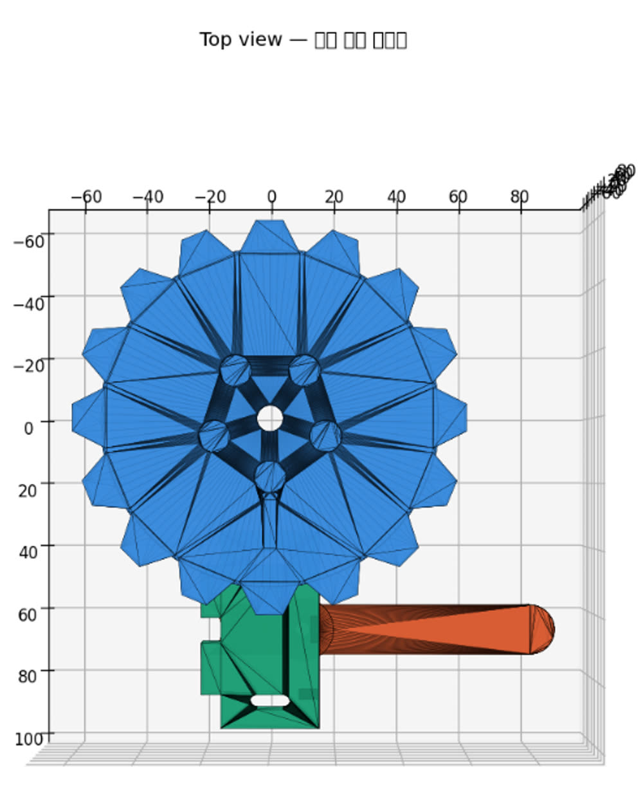
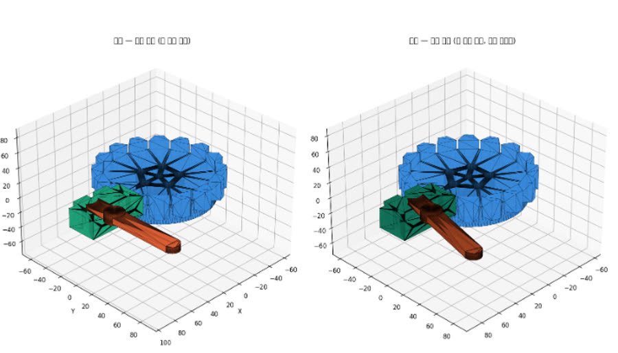
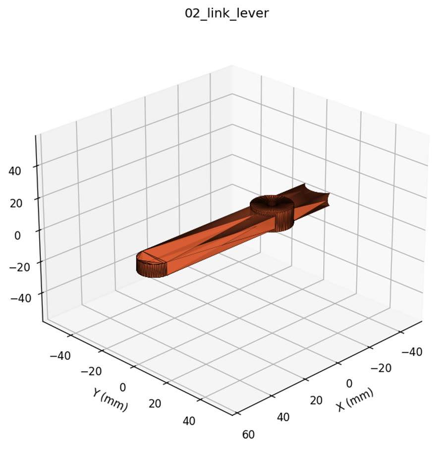

비행 중 난기류로 캐빈도어(화장실·갤리 도어 등)가 갑자기 열리며 승객·승무원이 다치는
낙상 사고를 막기 위한 하드웨어 기반 잠금장치 'G-Lock'을 제안했습니다.
전자 장치에 의존하지 않는 기구적(mechanical) 해결책으로 신뢰성과 인증 용이성을 확보하는
것이 핵심 아이디어이며, 3D 목업 설계까지 진행해 본선 5위에 입상했습니다.
항공 안전기구 설계3D 목업아이디어 공모전
설계 목업

G-Lock 기구부 Top View

레버 조작 시 잠금 동작

부품 구성
수행 내용
문제 정의 — 난기류 관련 기내 부상 사고 사례를 조사해, 캐빈도어 개방으로 인한 낙상이 반복되는 문제임을 데이터로 정의
기구 설계 — 레버 조작으로 잠금·해제되는 기계식 잠금 구조를 설계하고 3D 모델 목업 제작 (설계 관점 정리 문서 작성 담당)
멘토링 반영 — Airbus 현직 엔지니어 멘토링 2회를 거치며 인증·정비성 관점의 피드백을 설계에 반영